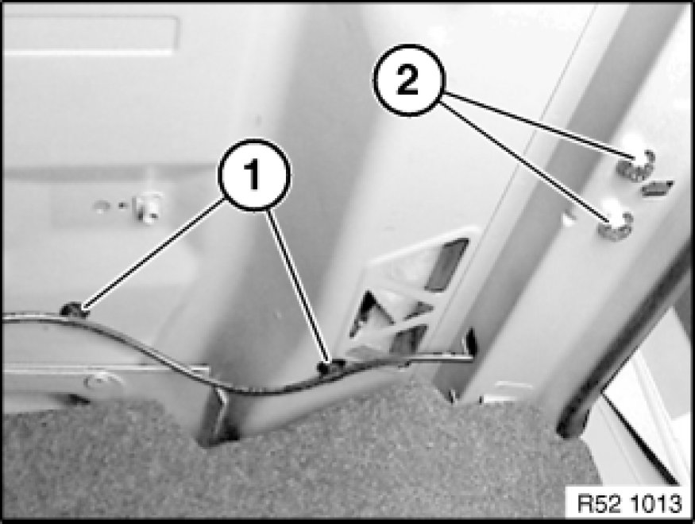
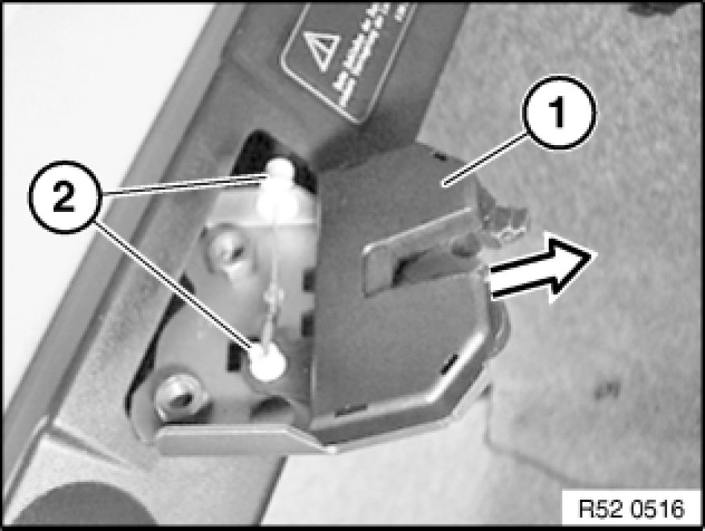
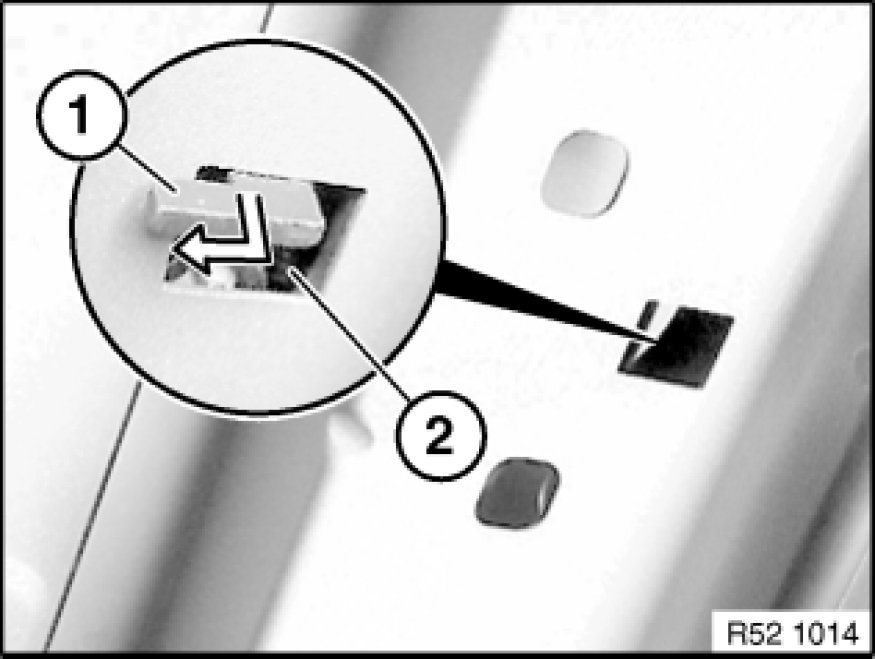

52 26 311 Removing and Installing/Replacing Lock for Left or Right Rear Seat Backrest (Through-Loading System)
52 26 311 - Removing and installing/replacing lock for left or right rear seat backrest (through-loading system)

Unlock rear seat backrest and fold down.
Note:
In event of faulty unlocking, perform emergency opening Rear Seat - Normal.
Unclip Bowden cable from holders (1).
Unfasten screws (2).
Tightening torque 52 26 08AZ 52 26 Rear Seats (Through-Loading System).

Pull lock (1) out of installation opening slightly and unclip Bowden cable (2).
Remove lock completely from installation opening.
Installation:
Catches (2) on lock must not be damaged.
Bowden cable must be correctly anchored in catches (2).

Installation:
Slide guide lug (1) of lock into opening (2).

Adjusting lock:
- Slacken screws
- Firmly push engaged backrest back
- Tighten down screws